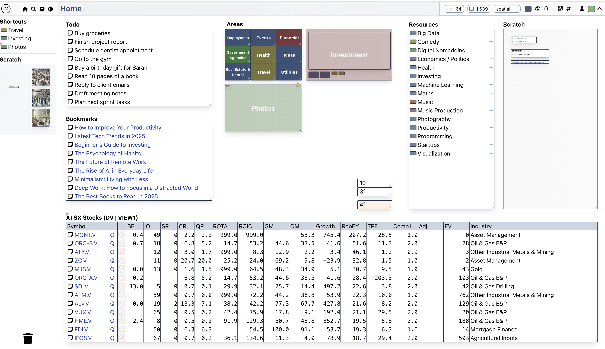

Small things belong, too.
A note, a link or a rating is an item in its own right. Keep the little details next to the documents and images they relate to, without making a file for everything.
Your personal information space
Keep your notes, documents, images and ideas together. Give them a little structure, or a lot. Let it grow with you.
Free software. Your computer. Your information.

A little less filing. A little more thinking.
You don’t need a perfect system before you begin. Put something down, connect a few pieces, and let the structure follow the work.
A note, a link or a rating is an item in its own right. Keep the little details next to the documents and images they relate to, without making a file for everything.
Compare options in a table. Arrange material on a page. Leave a few ideas loosely grouped. Add structure where it helps, and fall back to search when you need it.
Questions, comparisons and decisions deserve a place alongside your sources. Return to what you collected and what you made of it.
Make yourself at home
Run Infumap on your computer, or host it on your own server for remote access and sharing.
Download the latest releaseUnzip the download, move Infumap.app to Applications, and open it. Use the menu bar icon to launch Infumap in your browser.
Extract the download, open a terminal in that directory, and run:
./infumap webThen open localhost:8000 in your browser.
Infumap is actively developed, and some rough edges remain. Use a release for everyday work. Bug reports, ideas and contributions are welcome.